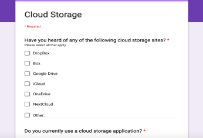
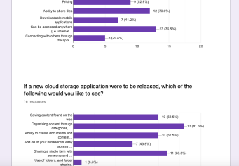

In The Cloud
What was the problem? Better yet, why was this prompt created in
the first place? As the role of the designer and developer,
I had to figure out what other competitors had within their sites
and what lacked based on user research. The top problems that came
up was the inability to upload files from both desktop and mobile,
sharing files in the platform to others users and non-users, and
larger storage plans that incorporated more affordable prices.
Entering into the market of cloud storage, I wanted to build an
application that gave users the freedom and ease of managing their
content without limits of gaining access dependent on their current
location. With this, I created a mobile application as well as a
desktop site included features such as accessing files on and offline,
having control over collaborating between files, and removing the constraints
being put on consumers for adequate amount of storage needed and desired.
Why is user experience so important? In simple terms, the users
experience needs to be of utmost importance when designing a brand.
An easily operated application means that the user will develop a
relationship with the brand and thus keep coming back. Lacking in
understanding when it comes to who the target user creates a volatile
relationship with both the brand as well as the consumers. This is
why when I sought out to gather information through surveys, user flows,
and user research; I developed the personas based off the needs of the
people rather than statistics. The results of the surveys taught myself
that features like being able to organize files into folders and sharing
a single item with another person, needed to be included as well as
expanding the application to allowing access both offline and online.
Taking and analyzing data of what users want to see in storage
sites through user surveys.
Ability to organize files
Once the surveys were completed and the results had been gathered,
the next step was to develop user personas. The two personas
were created based on the audience that is expected to be using
this platform.
Goals
Frustrations
Goals
Frustrations
Problem
Solution
Process
User Surveys
The Results
-Sharing a single item
-Accessing offline and online
-Mobile and Desktop app
-Simple user interface
-Larger storage capacities
-Accessing storage usage
-Connecting with others
-Ability to upload files on both platforms (mobile and desktop)
User Personas

Garrett
Role- Assistant Manager
-Accessing files anywhere
-Connecting with others for collaboration
-Organizing files into folders and categories
-Saving content from websites
-Pricing
-Not downloadable through a mobile app
-Files being deleted without doing so due to storage capacity
Cassie
Role- Assistant Manager
-Accessing files anywhere
-Connecting with others for collaboration
-Organizing files into folders and categories
-Saving content from websites
-Pricing
-Not downloadable through a mobile app
-Files being deleted without doing so due to storage capacity
User Stories & Sitemap